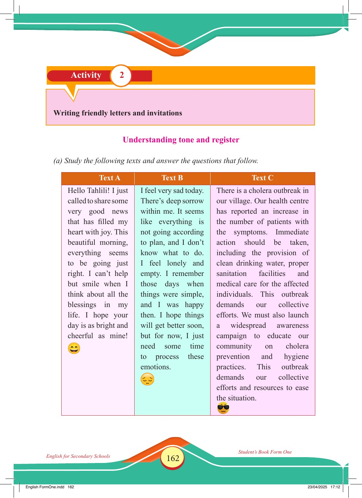

Accessible text transcript - page 162
Use the reader's read-aloud controls or select an individual segment below.
Printed book page 162. English for Secondary Schools Student’s Book Form One 23/04/2025 17:12 Activity 2: Writing friendly letters and invitations Activity 2 Writing friendly letters and invitations Understanding tone and register (a) Study the following texts and answer the questions that follow. Text A Hello Tahlili! I just called to share some very good news that has filled my heart with joy. This beautiful morning, everything seems to be going just right. I can’t help but smile when I think about all the blessings in my life. I hope your day is as bright and cheerful as mine! grinning face with smiling eyes Text B I feel very sad today. There’s deep sorrow within me. It seems like everything is not going according to plan, and I don’t know what to do. I feel lonely and empty. I remember those days when things were simple, and I was happy then. I hope things will get better soon, but for now, I just need some time to process these emotions. sad face with closed eyes Text C There is a cholera outbreak in our village. Our health centre has reported an increase in the number of patients with the symptoms. Immediate action should be taken, including the provision of clean drinking water, proper sanitation facilities and medical care for the affected individuals. This outbreak demands our collective efforts. We must also launch a widespread awareness campaign to educate our community on cholera prevention and hygiene practices. This outbreak demands our collective efforts and resources to ease the situation. face with sunglasses and a stern expression Text A, a cheerful message sharing very good news and expressing joy and blessings, ending with a smiling emoji Text A column with smiling emoji. Text B, a sad personal message expressing sorrow, loneliness, and hope that things will get better, ending with a sad emoji Text B column with sad emoji. Text C, a formal message about a cholera outbreak in the village, calling for clean water, sanitation, medical care, and community awareness Text C column with sunglasses emoji. English FormOne.indd 162 Return to the page image